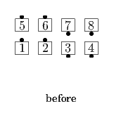
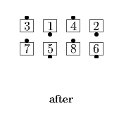
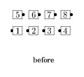
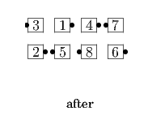

From a 2x4 formation: Ends Split Circulate twice while out-facing Centers Crossover Circulate and then Circulate, and in-facing Centers Circulate and then Crossover Circulate. Ends in a 2x4. Everyone simply does their part of these actions; they do not re-evaluate the setup as the call progresses.
 
From columns, the "out-facing Centers" and "in-facing Centers" are evaluated relative to their center box.
 
© Copyright 2004-2017 Vic Ceder and CALLERLAB Inc., The International Association of Square Dance Callers. Permission to reprint, republish, and create derivative works without royalty is hereby granted, provided this notice appears. Publication on the Internet of derivative works without royalty is hereby granted provided this notice appears. Permission to quote parts or all of this document without royalty is hereby granted, provided this notice is included. Information contained herein shall not be changed nor revised in any derivation or publication.